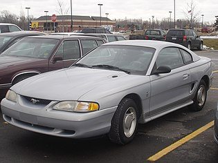
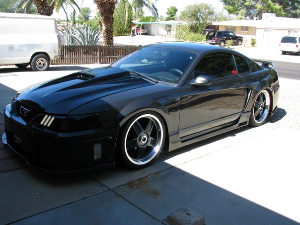

1994 г. Mustang пережил первый серьёзный редизайн за 15 лет. Дизайн под кодовым названием «SN-95», базировался на обновлённой версии заднеприводной платформы «Fox», называемой «Fox-4». Он был сделан в абсолютно новом стиле, разработанном Patrick Schiavone, и имел некоторые элементы, сходные с первыми Mustang.
Базовая модель имела V-образный 6-цилиндровый двигатель объёмом 3,8 литра мощностью 145 (1994—1995) и 150 (1996—1998) л.с (108 кВт). Комплектация GT шла уже с 8-цилиндровым двигателем объёмом 5 литров и мощностью 228 л. с. Также была модель Cobra с пятилитровым двигателем мощностью 240 л. с. (179 кВт). Mustang в третий раз был назван «Автомобилем Года» журналом Motor Trend magazine’s. 
1999 и 2004 модельные годы стали юбилейными для модели. В эти периоды машины сходили с конвейера с особыми шильдиками на передних крыльях: «35th Anniversary» и «40th Anniversary» соответственно. Несмотря на это, в 1999 году юбилейная ограниченная серия включала в себя только 4628 автомобилей. Все они были комплектации GT и отличались от прочих некоторыми изменениями во внешнем оформлении. В 2001 году вышла ограниченным тиражом комплектация Bullitt, в честь одноименного фильма 1968 года.
В 2003 году вернулась Mach 1, корни которой растут из первого поколения Mustang. Автомобили этой серии оснащались двигателями V8 4,6 с увеличенной компрессией, четырьмя распредвалами и 32 клапанами. Воздух на впуск поступал через функциональный воздухозаборник в центре капота. В такой конфигурации двигатель выдавал 305 л. с. и позволял машине проходить квотер за 13.8 секунд при скорости на выходе более 102 миль/ч. 